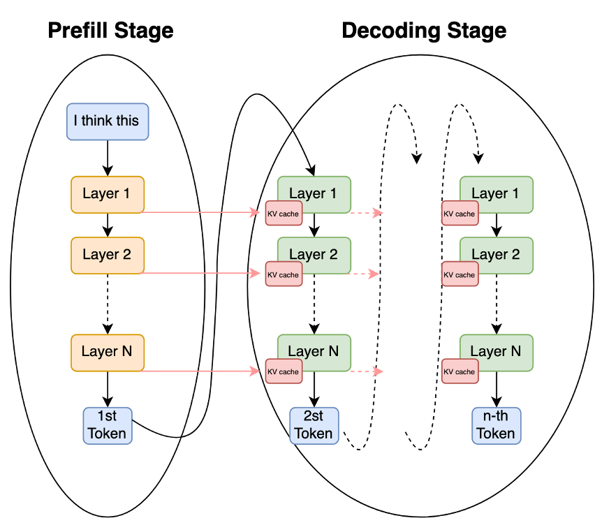
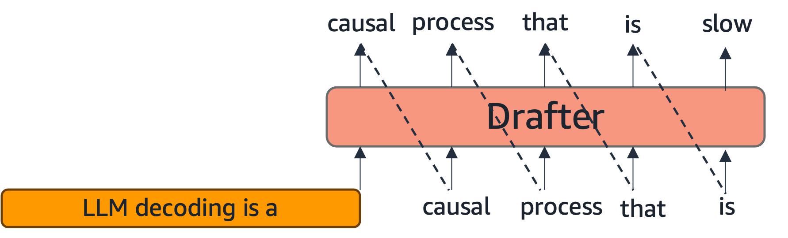
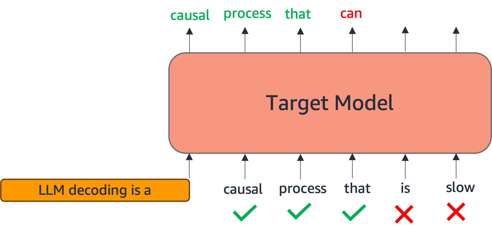

LLM Decoding and Inference-Time Scaling #
The previous subsections looked at the hardware a kernel runs on and the languages it is written in. We now look at how a language model actually produces text, i.e., decoding, and at how spending more compute at generation time, i.e., inference-time scaling, can buy better outputs. Decoding earns a place in this tutorial for two distinct reasons, and it is worth separating them:
- “LLM inference is one of the most important workloads that efficient kernels exist to accelerate (training is the other). Understanding how decoding works, and why it is expensive, is understanding a large part of the demand for the kernels this tutorial teaches an LLM to write.
- Methods in this tutorial generate kernels by decoding, and the reinforcement-learning stages (Sections 2.2, 3.1) spend most of their wall-clock time doing so. How fast we decode therefore shapes both the kernel-writing model’s output and the cost of training it.
How LLMs decode #
A language model is a next-token distribution \( \pi_\theta(\cdot \mid \text{context}) \) (Section 1.5). Generating a response is an autoregressive loop: sample or select one token, append it to the context, and repeat until a stop token. Because each step conditions on all previous tokens, generation is inherently sequential, i.e., token \( t \) cannot be produced until token \( t-1 \) exists.
Two phases. A single generation splits into two very different regimes:
- Prefill. The prompt is processed in one forward pass over all its tokens in parallel, producing the first output token and populating the KV cache (the per-layer keys and values for every prompt token, saved so attention need not recompute them). Prefill is compute-heavy and parallel, so it is typically compute-bound.
- Decode. Output tokens are then generated one at a time, each a forward pass over a single new token that attends to the growing KV cache. Because each step does little arithmetic but must read the entire cache (and all model weights) from memory, decode is memory-bandwidth-bound, the memory-wall regime of Section 1.3. As the sequence lengthens, the KV cache grows, so decode gets more bandwidth-bound over time.

The two stages of autoregressive generation: prefill processes the whole prompt in one parallel pass and populates the KV cache, then decode generates one token at a time, each step reading the growing cache.
Greedy versus sampling. How the next token is chosen from \( \pi_\theta \) is the decoding strategy. Greedy decoding always takes the single highest-probability token, giving one deterministic output:
\[ y_t \;=\; \arg\max_{v \in \mathcal{V}} \; \pi_\theta(v \mid x, y_{\lt t}). \]Stochastic decoding instead samples \( y_t \sim \pi_\theta(\cdot \mid x, y_{\lt t}) \) , usually after reshaping the distribution with a temperature \( T \gt 0 \) , which divides the logits \( z_t \) before the softmax:
\[ \pi_\theta^{(T)}(v \mid x, y_{\lt t}) \;=\; \frac{\exp\!\big(z_t[v] / T\big)}{\sum_{v' \in \mathcal{V}} \exp\!\big(z_t[v'] / T\big)}. \]As \( T \to 0 \) this concentrates all mass on the top token (recovering greedy), \( T = 1 \) leaves the model’s distribution unchanged, and \( T \gt 1 \) flattens it toward uniform and increases diversity. Sampling is then usually restricted to the most probable tokens by a truncation: top- \( k \) keeps the \( k \) highest-probability tokens, while top- \( p \) (nucleus) keeps the smallest set \( \mathcal{V}_p \) whose cumulative probability reaches \( p \) ,
\[ \mathcal{V}_p \;=\; \text{smallest set with} \sum_{v \in \mathcal{V}_p} \pi_\theta^{(T)}(v \mid x, y_{\lt t}) \;\ge\; p, \]after which the distribution is renormalized over the kept set and sampled from. Sampling is what makes generation diverse: prompting the same model twice yields different outputs, which is precisely the property the sampling-based methods of Section 2.1 (drawing many candidate kernels) and the GRPO groups of Section 1.6 rely on.
Decoding as a workload: why efficient kernels matter #
Step back to the tutorial’s premise. We want LLMs to write fast kernels because the workloads those kernels run on are expensive, and LLM inference is one of the most important of those workloads (large-scale training is the other). The cost structure of inference follows directly from the decoding mechanics above. Prefill and decode stress the hardware differently, and the decode phase in particular is unusually punishing: it is memory-bound, it repeats once per generated token, and its KV-cache reads grow with context length. This is exactly why the long-tail kernels named in Section 1.3, fused attention, RMSNorm, fused GEMM epilogues, are worth hand-writing (or generating), each one speeding up an operation that a serving system runs billions of times. A sister tutorial on inference optimization [1] develops this workload and its optimizations, KV caching, paged attention, batching, quantization, in depth. Here we need only the parts that bear on kernel generation.
Speeding up the RL rollout loop #
The second role is more practical, and specific to how this tutorial teaches models to write kernels. One of the prominent methods is Reinforcement learning (RL). RL for kernels (Sections 2.2, 3.1) repeats a loop: the policy generates candidate kernels, an oracle scores them, and a gradient step follows. In that loop the generation, i.e., the rollout step is decoding, and it usually dominates wall-clock time, because GRPO draws a group of \( G \) full rollouts per prompt (Section 1.6) and each rollout is a full autoregressive generation, whereas the gradient update is a single pass.
Modern RL frameworks are architected around this fact. Systems such as VERL [2] run a separate inference/rollout engine alongside the training engine, delegating generation to a high-throughput serving stack, typically vLLM [3] or SGLang [4]. The point is that every inference optimization from the serving world then accelerates RL rollouts directly:
- KV caching avoids recomputing attention over already-generated tokens within each rollout.
- Paged attention (vLLM) stores the KV cache in non-contiguous blocks, eliminating the memory fragmentation that otherwise caps how many rollouts run concurrently.
- Continuous batching keeps the accelerator busy by admitting and retiring sequences dynamically rather than waiting for a whole batch to finish, which matters because rollouts in a group finish at different lengths.
- Speculative decoding [5] drafts several tokens with a small model and verifies them in one pass of the large model, raising decode throughput without changing the output distribution.


Static batching (left) holds every request until the longest one finishes, wasting slots as short rollouts idle; continuous batching (right) admits and retires sequences at each decode step, keeping the accelerator full, which matters because the rollouts in a GRPO group finish at different lengths.

Paged attention stores each rollout's KV cache in fixed-size blocks mapped through a block table, like virtual memory, so the cache need not be contiguous. This removes the fragmentation that otherwise caps how many rollouts run at once.


Speculative decoding: a small drafter proposes several tokens (top) that the large model verifies in a single parallel pass (bottom), accepting the longest correct prefix. It raises decode throughput without changing the output distribution.
The practical consequence is a tight coupling: faster decoding means more rollouts per GPU-hour means more RL for a fixed budget, so the efficiency of the inference engine bounds the efficiency of the training system. There is also a pleasing loop here, i.e., the kernels this tutorial teaches models to write are the same kind that make vLLM and SGLang fast, so better inference kernels accelerate the very RL used to train better kernel-writing models.
Inference-time scaling #
Decoding is not just something to make cheap; it is also a lever. Inference-time scaling (or test-time compute) trades extra computation at generation time for higher-quality outputs, without touching the model weights. The striking empirical finding is that this trade can be more compute-efficient than scaling the model: on hard reasoning tasks, a smaller model given more test-time compute can match or beat a much larger model decoded once [8], and quality often improves predictably as the compute budget grows, a test-time analogue of the training scaling laws [9]. It is broadly the mechanism behind reasoning models such as OpenAI o1 and DeepSeek-R1 [10]. The gain comes in two complementary flavors, parallel scaling (draw many independent samples and select) and sequential scaling (revise a single line of work over several steps) [8], and several forms of each recur in this tutorial:
- Best-of-
\( N \)
with a verifier. Sample
\( N \)
candidate responses and keep the best one according to a selector. For open-ended text the selector is weak, but kernels come with an objective verifier, i.e., compile, check against a reference, and time it, so best-of-
\( N \)
genuinely works: sampling more candidate kernels and keeping the fastest correct one reliably improves results, and success climbs steadily with
\( N \)
(a scaling first shown at large sample counts for competitive programming [11] and formalized as training a verifier to rank samples [12]). This is exactly the
pass@knotion from Section 1.5 turned into a generation strategy. - Self-consistency [6]. Sample many reasoning paths and take a majority vote over their answers. It helps when answers are comparable but, unlike a verifier, cannot certify correctness, so for kernels a verifier-based selector is usually preferable.
- Sequential refinement. Rather than sampling independently, feed a candidate’s feedback (a compiler error, a failing test, a profile) back into the model and let it revise, iterating over several turns [13]. For kernels the feedback is unusually rich and objective (exact compiler diagnostics and measured runtimes), so refinement is especially effective. This is the basis of the multi-turn and evolutionary agents of Sections 3.1 and 3.2.
- Reasoning as compute. Allocating decode tokens to an explicit chain of thought [7] before the final answer is itself inference-time scaling: it spends generation compute to improve quality. This is why the reasoning-augmented targets of Sections 1.5 and 2.1 exist, and why Section 3.3 treats inference-time scaling as a first-class tool for kernel code reasoning.
The common thread is that spending more test-time compute, more samples, more turns, more reasoning, is a dependable way to get better kernels, and it is especially effective here because an automatic verifier lets us select reliably among the extra candidates. Section 3 develops these strategies specifically for kernel generation.
References #
- R. Saha, A. Manocha, Y. Park, et al. Algorithms and Systems for Efficient Inference in Generative AI, AAAI 2026 Tutorial. neuron-science.github.io/inference_optimization/
- G. Sheng, C. Zhang, Z. Ye, X. Wu, W. Zhang, R. Zhang, Y. Peng, H. Lin, and C. Wu. HybridFlow: A Flexible and Efficient RLHF Framework (VeRL). EuroSys 2025. arxiv.org/abs/2409.19256
- W. Kwon, Z. Li, S. Zhuang, et al. Efficient Memory Management for Large Language Model Serving with PagedAttention (vLLM). SOSP 2023. arxiv.org/abs/2309.06180
- L. Zheng, L. Yin, Z. Xie, et al. SGLang: Efficient Execution of Structured Language Model Programs. NeurIPS 2024. arxiv.org/abs/2312.07104
- Y. Leviathan, M. Kalman, and Y. Matias. Fast Inference from Transformers via Speculative Decoding. ICML 2023. arxiv.org/abs/2211.17192
- X. Wang, J. Wei, D. Schuurmans, et al. Self-Consistency Improves Chain of Thought Reasoning in Language Models. ICLR 2023. arxiv.org/abs/2203.11171
- J. Wei, X. Wang, D. Schuurmans, et al. Chain-of-Thought Prompting Elicits Reasoning in Large Language Models. NeurIPS 2022. arxiv.org/abs/2201.11903
- C. Snell, J. Lee, K. Xu, and A. Kumar. Scaling LLM Test-Time Compute Optimally Can Be More Effective than Scaling Model Parameters. arXiv:2408.03314, 2024. arxiv.org/abs/2408.03314
- B. Brown, J. Juravsky, R. Ehrlich, et al. Large Language Monkeys: Scaling Inference Compute with Repeated Sampling. arXiv:2407.21787, 2024. arxiv.org/abs/2407.21787
- DeepSeek-AI. DeepSeek-R1: Incentivizing Reasoning Capability in LLMs via Reinforcement Learning. arXiv:2501.12948, 2025. arxiv.org/abs/2501.12948
- Y. Li, D. Choi, J. Chung, et al. Competition-Level Code Generation with AlphaCode. Science, 378(6624), 2022. arxiv.org/abs/2203.07814
- K. Cobbe, V. Kosaraju, M. Bavarian, et al. Training Verifiers to Solve Math Word Problems. arXiv:2110.14168, 2021. arxiv.org/abs/2110.14168
- A. Madaan, N. Tandon, P. Gupta, et al. Self-Refine: Iterative Refinement with Self-Feedback. NeurIPS 2023. arxiv.org/abs/2303.17651